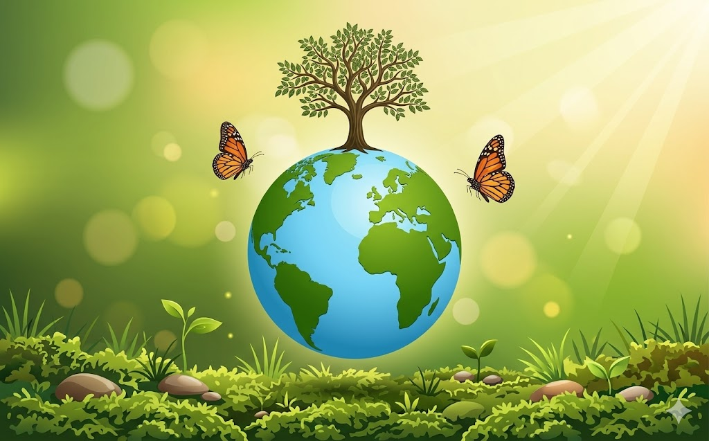
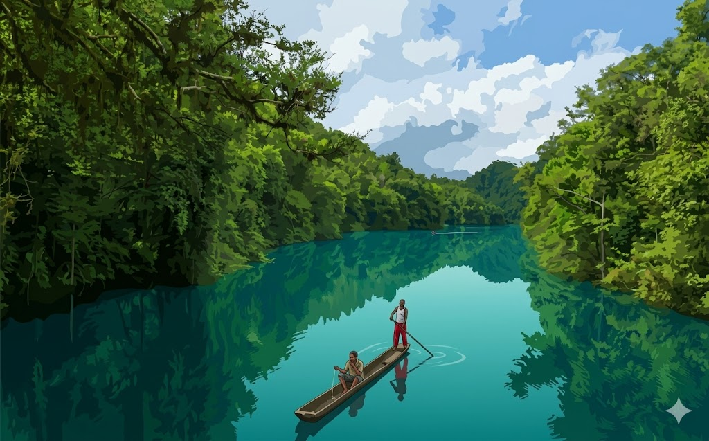
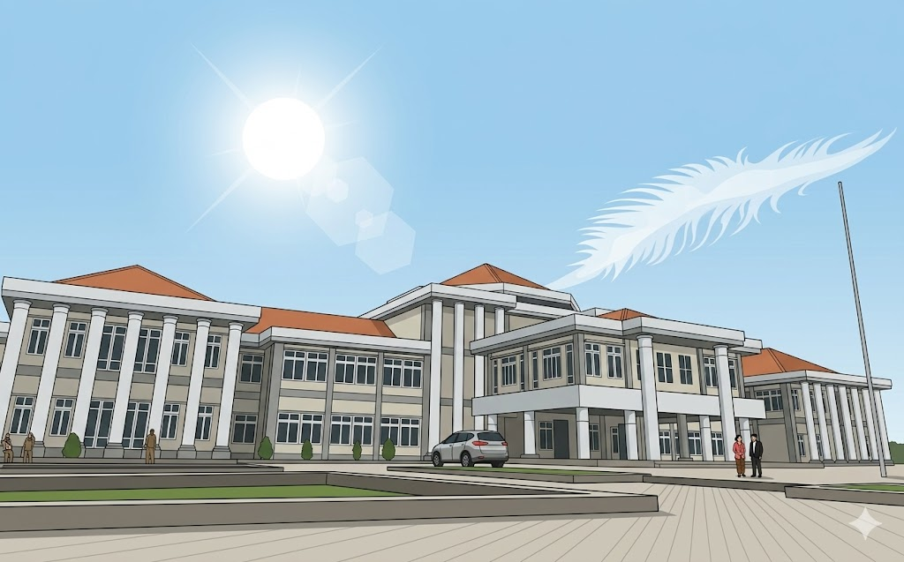

Melindungi, melestarikan, dan meningkatkan kualitas lingkungan hidup demi kesejahteraan masyarakat Maybrat yang berkelanjutan.
Mengenal lebih dekat Dinas Lingkungan Hidup Kabupaten Maybrat, visi misi, dan struktur organisasinya.

"Terwujudnya Kabupaten Maybrat yang Bersih, Hijau, dan Berwawasan Lingkungan demi Kesejahteraan Masyarakat yang Berkelanjutan."
Berbagai layanan administrasi dan publik yang disediakan oleh Dinas Lingkungan Hidup Kabupaten Maybrat untuk masyarakat.
8 Mei 2025 · Program Lingkungan
Dinas Lingkungan Hidup Kabupaten Maybrat secara resmi meluncurkan program Bank Sampah sebagai salah satu upaya strategis dalam pengelolaan sampah berbasis masyarakat yang berkelanjutan...
Baca SelengkapnyaDokumentasi kegiatan Dinas Lingkungan Hidup Kabupaten Maybrat dalam pelestarian dan pengelolaan lingkungan hidup.
Program Penghijauan Kota Kumurkek 2025
Maret 2025

Silakan hubungi kami atau kunjungi kantor Dinas Lingkungan Hidup Kabupaten Maybrat untuk informasi lebih lanjut.
Sampaikan pengaduan, pertanyaan, atau masukan Anda kepada kami. Kami akan merespons dalam 2×24 jam kerja.

Kantor Dinas Lingkungan Hidup Kab. Maybrat
Jl. Pemerintahan No. 1, Kumurkek, Papua Barat Daya